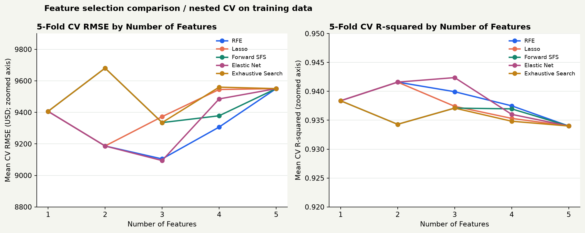
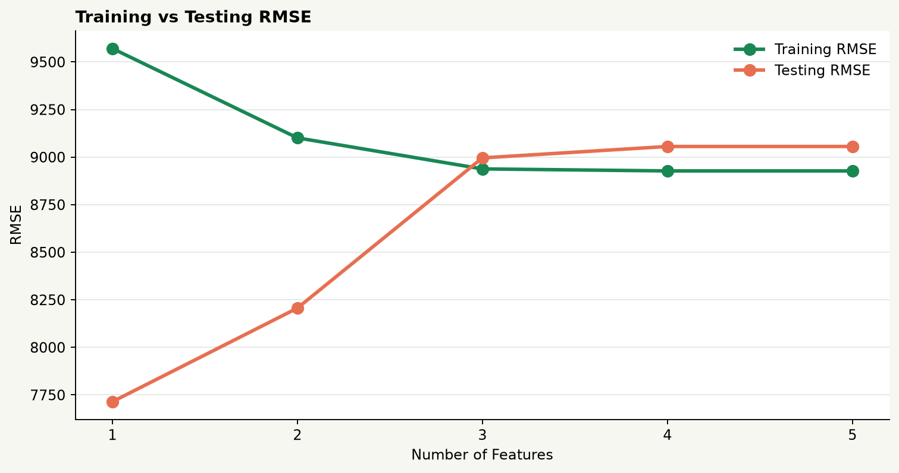

RFE 最低測試 RMSE載入中
RFE 最佳特徵數載入中
RFE 測試 R²載入中
01 / RFE MODEL LAB
選擇模型規格
同一訓練／測試切分 · 按特徵數切換實際擬合模型
ACTIVE MODELRFE · k = 1
SELECTED FEATURES載入中
TEST RMSE—
TEST R²—
02 / LIVE PREDICTION
試算新創獲利
預測由目前選定的 RFE 線性模型即時計算
投入條件
調整數值或所在地，預測結果會即時更新。
模型預測獲利—
模型係數
係數代表其他條件固定時，特徵與預測獲利的線性關係。
| 參數 | 特徵 | 估計係數 |
|---|
03 / CROSS-VALIDATED PERFORMANCE
特徵數與泛化能力
訓練集外層 5-fold CV 平均 · SD 詳見比較表

04 / SELECTOR SCORECARD
五種選擇方法比較
| 方法 | 特徵數 | 選入特徵 | CV RMSE 平均 ± SD | 測試 RMSE | 測試 R² |
|---|---|---|---|---|---|
| 正在讀取方法比較結果… | |||||
正在整理交叉驗證與 holdout 結果…
模型選擇與交叉驗證只使用 40 筆訓練資料；10 筆 holdout 測試集只作最後評估。外層 5-fold 估計泛化表現，內層 CV 負責特徵或正則化選擇。小樣本下各折分數波動大，請同時查看標準差。
05 / RFE HOLDOUT SCORECARD
RFE 測試集結果
保留原始 RFE 分析 · 同一 holdout 測試集
| 特徵數 | 選入特徵 | MSE | RMSE | MAE | R² |
|---|---|---|---|---|---|
| 正在讀取模型結果… | |||||
06 / GENERALIZATION CHECK
訓練與測試的落差
誤差落差可提示泛化風險，不代表因果關係

讀圖提示
Training 與 Testing RMSE 越接近，通常代表這次切分下的泛化落差較小；兩者都高則可能欠擬合。只有 50 筆資料，判讀仍需保守。
07 / TEST RESIDUALS
測試集殘差與離群點
以目前選定模型計算 · 殘差 = 實際獲利 − 預測獲利
| 測試樣本 | 實際獲利 | 預測獲利 | 殘差 |
|---|
08 / 方法與指標
怎麼讀這份分析
RFE
反覆移除標準化後係數較小的特徵，再比較指定特徵數。
Lasso L1
以交叉驗證選擇正則化強度，再按標準化係數絕對值排序。
Forward SFS
逐步加入能改善內層交叉驗證 RMSE 的特徵。
Elastic Net
結合 L1 與 L2 正則化，按交叉驗證係數排名。
Exhaustive Search
枚舉固定特徵數的所有組合，以內層 CV RMSE 選最佳子集。
MSE / 均方誤差
預測誤差平方的平均；越低越好，大誤差會被放大。
RMSE / 均方根誤差
MSE 開平方，與獲利同單位；數值越低越好。
MAE / 平均絕對誤差
預測誤差絕對值的平均；越低越好，較少放大離群誤差。
R² / 決定係數
相對於平均值基準所解釋的變異；越接近 1 通常越好，也可能小於 0。
State / 地區編碼
California 作為基準類別；展開為 State_Florida 與 State_New York。
Nested CV
訓練集外層 5-fold 評估、內層 CV 選特徵；holdout 測試集不參與調參。